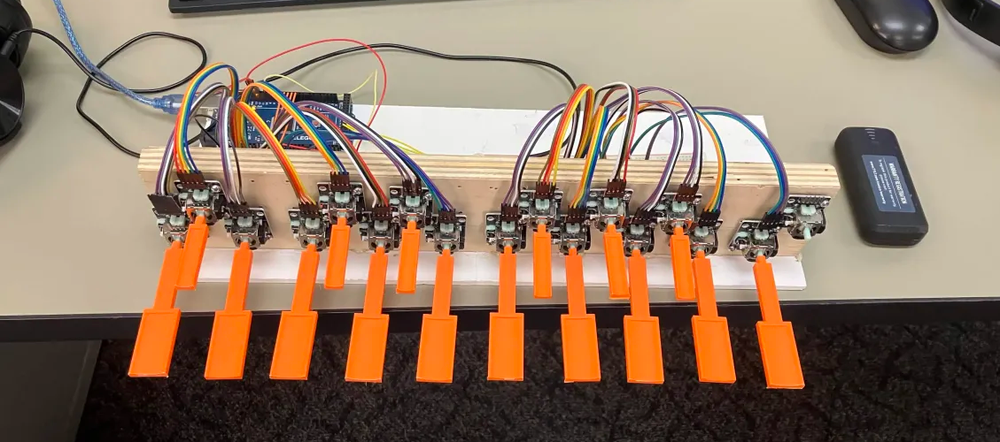

Ta-da! It's really satisfying that it's together is a decently playable state. We have plenty to do still, but it feels
like it's really gotten somewhere.
While I did this, Weston programmed sustain functionality and a piano-like evelope/decay mode. The software is developing
alongside the hardware.
Oh yeah, we'll probably print the black keys in, well, black at some point.
When I come back from spring break (over which I won't be able to work onthe project because I'm visiting
UMass Amherst [oh yeah, I don't think I've mentioned that I've gotten into that, UCLA, and some others to Mr. Crockett
{a.k.a. one of the only people who will ever read this}]), I'll start work on designing a more polished final case that
we'll laser-cut out of wood in engineering.